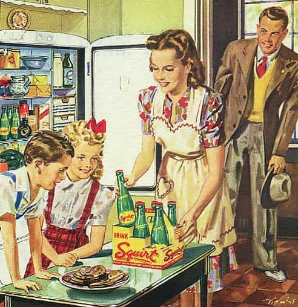
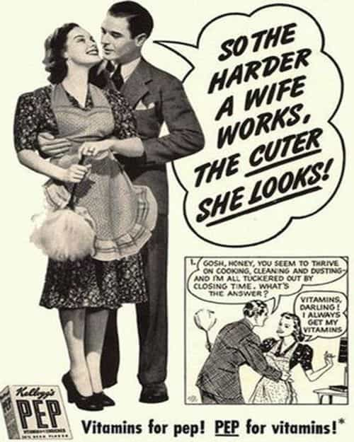
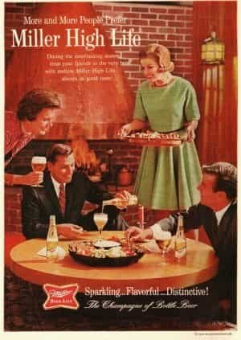
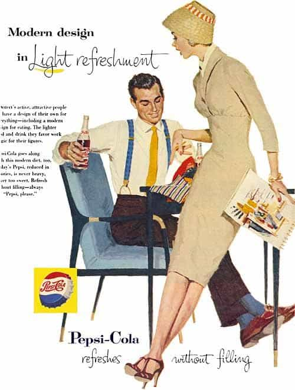
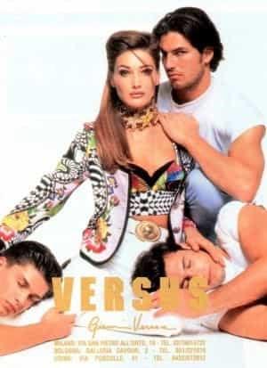

Michael is the author of Staying Married in a Degenerate Age. Follow him on Twitter or Facebook. You can read more of his writing at Honor and Daring.


Commercials are a convenient window into the culture. Even when commercials don’t exactly reflect the culture, they still speak to what the culture aspires to. Unfortunately, a comparison of the commercials of today with those of the past reveals that our culture has degenerated in several areas.

In commercials from the 1960s, it is clear that society was still structured around a patriarchal model with the husband being the head of the family. As time went on, the traditional male and female roles diminished but it was still evident in the 1980s. As hard as it is to imagine, there was a time when slim and feminine wives actually cared about making their husbands happy as demonstrated by the following advertisements.


Also notice how both men and women did not dress like slobs.
Today, men are not portrayed as respected members in a marriage. At best, husbands are portrayed as being hapless idiots. At worst, husbands are shown to be impediments to women’s happiness. Take this Roomba commercial. The husband is portrayed as a jackass. And what mother thinks of her children as pigs?
The Kingsford charcoal commercial below demonstrates the trend that husbands are ignorant dolts who are only deserving of a wife’s disdain.
Products aimed at families like breakfast cereal, soup, or TV dinners used to feature traditional households. When the entire family sat down for dinner it meant, mom, dad and at least two children. The modern equivalent paints a much different picture.
In the Banquet foods commercial above, mom comes home from a hard day of work to greet her hungry children. She is praised for her many roles—coach, artist, and even zoologist, as they sit down for a high carb, high fat, nutritionally deficient meal which will encourage obesity in her children. But there is no chair for dad at the table. Dad must have been an ignorant dolt so mom divorced him. Now, she is free—free to ride the cock carousel and free to work in a soul-killing dead end job.
In the rare event that fathers are portrayed as competent and loving, they are usually gay. Gay men always make wonderful fathers. In the following Campbell’s Soup ad, gay men are cast as being funny, creative, and nurturing fathers—the complete opposite of the modern portrayal of heterosexual fathers.
The reality is that homosexuals comprise only about 2% of the population and the number of them that want to adopt children are even lower. These ads are probably trying to target heterosexual women who seem to have a soft spot for gay men raising children. And gay men are not necessarily the wonderful fathers that they are portrayed to be in commercials. A British man claims he was molested by his gay father and his father’s boyfriend. When he went to social workers to get help, he was ignored because of the wholesome image gay men have in the media.

The idea that real women are fat and beautiful is another common theme in current advertising. Almost all clothing commercials feature at least one plus size model. And of course, Dove beauty products has made it a mission to highlight “real” beauty. Obese acceptance is inserted everywhere.
In this case, commercials are reflecting the changes in society. Americans are getting fatter. The average woman now weighs as much as the average man did in the 1960s. Advertisers have a nearly impossible task. They have to make fat women feel like they are still attractive.
The ads in the past did not have to contend with this dynamic. Many magazine ads from the 1950s and 1960s were drawings that showed the ideal woman to be tall, thin, and feminine.

Gucci runway show
It is not just the images of women that have changed. Men, too, are being portrayed differently in ads. Even though men have gotten fatter in the real world, you will not see obese, body positive male models. Instead, you will see ads featuring extremely wimpy men.
As an example, take Versace, the Italian fashion house. It was started by Gianni Versace, who was a homosexual, and it has always had a reputation for edgy ads that frequently featured gay themes. Yet, in the 1990s their ads featured somewhat muscular models.

Compare the Versace ad to this 2016 ad from Gucci, another Italian fashion house. It looks like the girl in the photo could easily beat the tar out of the weak male model.
Sweet parrot shirt!
These are just a few examples of the trends that can be detected by viewing advertisements. Of course, there are exceptions. Most women in ads are still thin because we find thin women attractive and you will still see intact traditional families in some commercials—but the overall drift of society is apparent. Our culture is stamping out the last vestiges of patriarchy, family, and traditional masculinity and femininity.
Read More: 40 Pictures That Show The Decline Of American Women